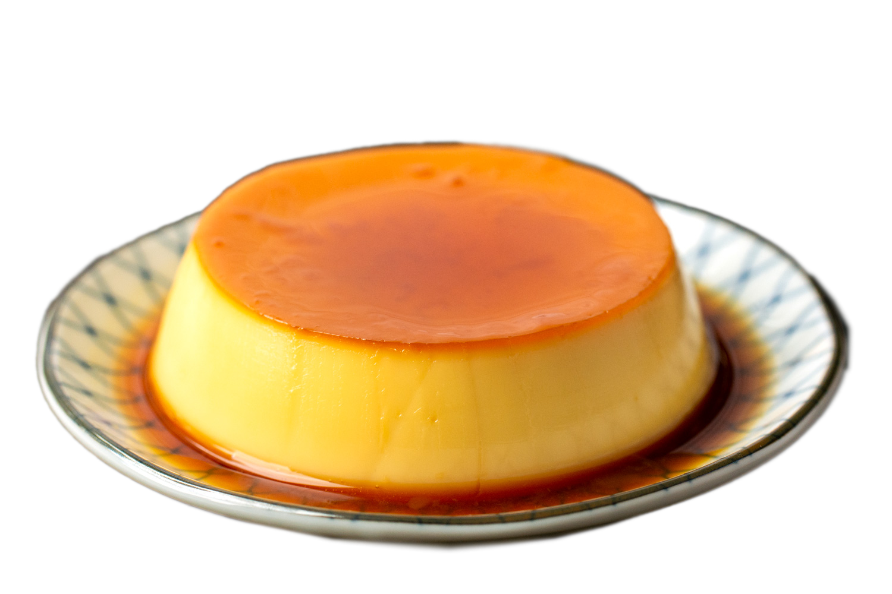

Japanese Custard Pudding(purin)
This authentic Japanese custard pudding know as Purin in Japan is the Japanese version of the popular Spanish and Mexican flan pudding. Follow this step-by-step Purin recipe guide to make this classic Japanese dessert.
Ingredients
Caramel Sauce
- ⅓ cup sugar
- 3 Tablespoons water
- 1 Tablespoon water to add at end
Custard Pudding
- 3 Large Eggs
- 500 ml whole milk
- cup sugar
- ½ teaspoon vanilla extraxt
Steps
- Preheat oven to 320° F. Prepare 6 ramekins. I used special metal purin cups that I got in Japan, hence the shape. See video above.In a small pan over medium high heat, add the sugar and 3T water and quickly stir together.In a small pan over medium high heat, add the sugar and 3T water and quickly stir together. Stop stirring, and allow the sugar water to come to a simmer. Cook the sugar until it is a deep brown, and is caramelized. Add 1 T of water to the caramel, to help loosen it up. Careful! It’s hot and may splatter a bit! Quickly pour caramel into the 6 ramekins.
- In a large microwave safe bowl, heat the milk until warm to the touch. Whisk in the sugar until combined. Whisk together the three eggs in a separate bowl. Add the whisked eggs to the milk/sugar, and whisk to combine. Add the vanilla and whisk to combine. Pour through a strainer, and divide the strained liquid among the 6 ramekins.
- Place the ramekins in a 9×13 cake pan (or a pan with sides that are about as tall or taller than the ramekins). Boil water, and pour the hot water in the cake pan (don’t get any in the purin!), about ½-¾ of the way up the sides of the ramekins.Transfer to the oven and bake for 40-50 minutes, or until the custard is soft but set, and no longer too liquidy. (note: a reader informed me that when using glass/ceramic ramekins it needed to bake on the longer side, about 50 minutes)
- Remove from oven, and allow the purin cups to cool completely. These are best served cold, so let them cool in the fridge before serving! To remove purin, run a knife along the edge of the ramekins and flip onto a plate, so the caramel sauce is on top. Or eat it straight from the ramekin! Garnish with some whipped cream and mint, if desired.